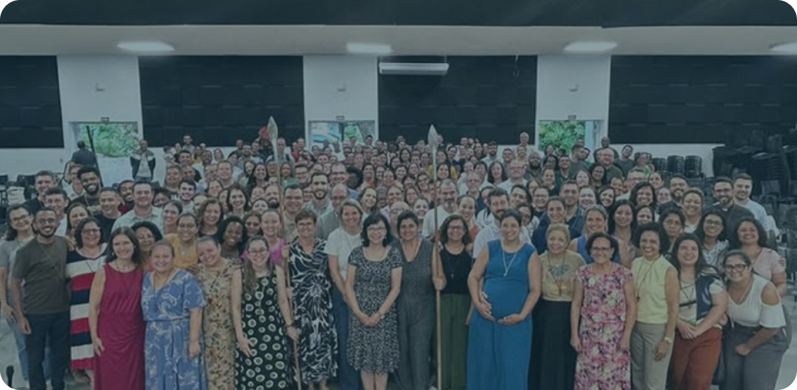
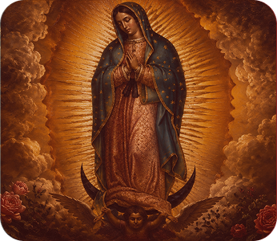
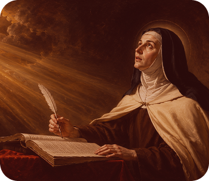
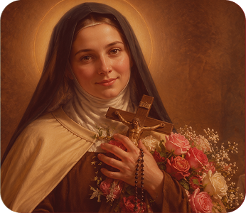
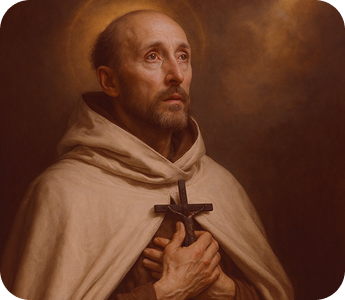
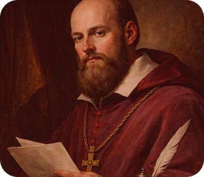
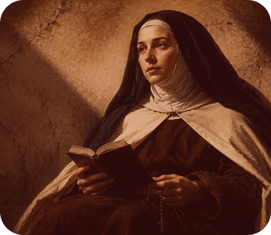

Campinas (SP)
Sede Fundacional- Endereço: Rua Culto à Ciência, 238 – Botafogo, Campinas – SP
- Telefone: (19) 99399-5793
- Grupo de oração: Quinta-feira às 20h
- E-mail: pantokrator@comptk.com
- Instagram: @compantokrator.cps
O Carisma El Shaddai-Pantokrator nasce da experiência do Amor ciumento do Pai pelos homens, impulsionando os filhos da Vocação à resposta de viver todas as coisas da vida, unido ao Filho encarnado, Jesus Cristo, em fidelidade ao Pai, sob a graça e força do Espírito Santo. Essa fidelidade os leva a viver uma santidade possível a todos os homens, uma santidade que se realiza na vida do homem comum, expressando-se numa relação com o criado em fidelidade ao Criador, como um sacrifício agradável e encontro perene com a glória do Pai.
própria da grande corrente de graça da Renovação Carismática;
São João da Cruz, Santa Teresa de Jesus, Elisabete da Trindade e, em especial, de Santa Teresinha do Menino Jesus. Essa espiritualidade que surge a partir da descoberta do "nada da alma", move os membros da Comunidade a viver a filiação a Deus pela 'infância espiritual' num profundo amor a Cristo e Sua Cruz, levando-os a se relacionar com todas as coisas e a viver as realidades humanas como oportunidades de oferta de fidelidade e amor a Deus.
Na vivência das Formas de viver a Vocação, nós nos inspiramos especificamente em dois santos: na Forma de Aliança, em São Francisco de Sales e na Forma de Vida Comum, em Santa Teresa de Jesus.
De todos os santos, a Virgem Santíssima, na expressão de Nossa Senhora de Guadalupe, é para a Comunidade o grande modelo de santidade, pois Ela é quem ensina todo o itinerário do Carisma, que nasce do "nada da alma" que se descobriu amada por Deus até a plena realização da vocação na filiação a Deus, que é o seu Tudo.
Veneramos de forma especial o "Ícone de Cristo Pantokrator, o Salvador" que leva o nome de nossa Comunidade: PANTOKRATOR, que expressa o significado, Deus Todo-Poderoso. Pantokrator evidencia para nós a encarnação do Filho que Se torna intimamente presente na história dos homens como Rei e Senhor, recapitulando toda a criação pela fidelidade ao Pai.
Como fruto do Carisma, surge ainda a Fraternidade Pantokrator, em que os irmãos vivem a vocação batismal alimentados da Espiritualidade El Shaddai-Pantokrator. Atraídos pelo Cristo fiel, esses irmãos encontram no dinamismo fraterno o lugar onde sua fé é animada, tornando-se dom na Igreja em favor do Reino de Deus.
André Luís Botelho de Andrade é casado, pai de quatro filhos. Formou-se em odontologia, exercendo a profissão por 5 anos. Em 1979 fez sua experiência no Batismo no Espírito Santo.
Em 1990 fundou a Comunidade Católica Pantokrator, e em 1998 abandonou a profissão de Dentista para iniciar a Forma de Vida Comum, juntamente com sua esposa Tania, dentro da Comunidade. Tendo formação em teologia e filosofia tomista, é pregador de retiros e congressos, professor de cursos de doutrina católica, autor de livros e artigos para revistas, sites e jornais. É membro do SBCC (Serviço Brasileiro de Comunhão do Charis). Foi presidente da Fraternidade das Novas Comunidades do Brasil.
A Vocação El Shaddai-Pantokrator surgiu em 1986, quando André Luís Botelho de Andrade, sentindo-se abandonado por Deus, tem uma forte experiência do "amor ciumento" de Deus a partir do texto de Is 49,15. Deus não o abandonara, ao contrário, tinha um "amor devorador" por ele. A resposta a essa experiência era uma só: "Se Deus me ama e me deseja assim, só me resta uma coisa: responder a esse amor com fidelidade". Então, impelido pelo Espírito Santo, André começa a provocar os jovens a renunciar ao mundo e viver uma juventude fiel ao Senhor em todas as coisas.
Em setembro de 1990, um primeiro grupo de jovens que sentiam ecoar em seus corações esse chamado, reuniu-se pela primeira vez, demarcando o início da Comunidade. Aos poucos, André e os primeiros foram entendendo que o chamado que portavam era na verdade um carisma na Igreja, ou seja, um dom dado pelo Espírito Santo para responder proteticamente a um desafio de um determinado tempo na História.
Em 30 de novembro do ano 2000, movidos sempre pela dor da infidelidade dos homens, a Obra da Comunidade foi se desenvolvendo surgindo os vários Projetos e ações evangelizadoras da Comunidade. Desse ímpeto missionário, a Comunidade sente o chamado de estender missões permanentes para além da Arquidiocese de Campinas. Assim, em 2000 surge a primeira Casa de Missão, na Diocese de Santos.
Atendo ao mover do Espírito, ecoam em nossos corações as palavras do Papa São João Paulo II: “Vós não tendes apenas uma história gloriosa para recordar e narrar, mas uma grande história a construir! Olhai o futuro, para o qual vos projeta o Espírito, a fim de realizar convosco ainda grandes coisas.”
A aprovação foi confirmada na Solenidade da Imaculada Conceição de Nossa Senhora, a Comunidade recebe a aprovação definitiva como Associação Privada de Fiéis de Direito Diocesano, mediante Decreto de Dom Bruno Gamberini, Arcebispo Metropolitano de Campinas. Por meio desse ímpeto missionário, a Comunidade sente o chamado de estender missões permanentes para além da Arquidiocese de Campinas.
A Comunidade, que na fundação chamava-se “Comunidade Católica El Shaddai”, em 2006, passa a se chamar “Comunidade Católica Pantokrator, O Filho da Virgem Maria”. Pantokrator é a tradução grega do hebraico Shaddai, significando o Todo-Poderoso, remetendo-nos à figura do Cristo.

Inscrever-se e participar do Encontro Vocacional: O ponto de partida principal para ingressar no caminho vocacional é a participação no Encontro Vocacional anual (promovido no início do ano pela comunidade).
Entrar em contato diretamente com a Comunidade: Você pode dar o primeiro passo através dos canais de atendimento oficial da Pantokrator:
O Caminho Vocacional é um processo gradual de discernimento e formação espiritual para compreender a vontade de Deus e o chamado à vocação no carisma Pantokrator:


Fim de nos ensinar que é o amor surpreendente, simples, verdadeiro, desinteressado, acolhedor, terno, mas ao mesmo tempo forte, corajoso e confiante.

Santa Teresa é a mãe e reformadora do Carmelo. É ela quem, como mestra da oração, nos ensina o modo maduro de viver a espiritualidade contemplativa.

Santa Teresinha do Menino Jesus e da Sagrada Face, para nós, da vocação El Shaddai-Pantokrator, é mestra de espiritualidade por excelência. Tudo pelo amor!

Doutor da vida cristã no seu dinamismo teologal, cantor da formosura de Deus e da beleza da criação. É também um dos maiores místicos da Igreja.

Muito cedo, fez um voto de viver a castidade e buscar a vontade do Senhor. Na história vamos percebendo o quanto ele buscou e o quanto encontrou o que Deus queria.

Jovem carmelita descalça, cheia de vida e de entusiasmo. Ao longo de seus 26 anos de vida, soube vivenciar o mistério da Trindade que habita no coração humano.
Onde Estamos